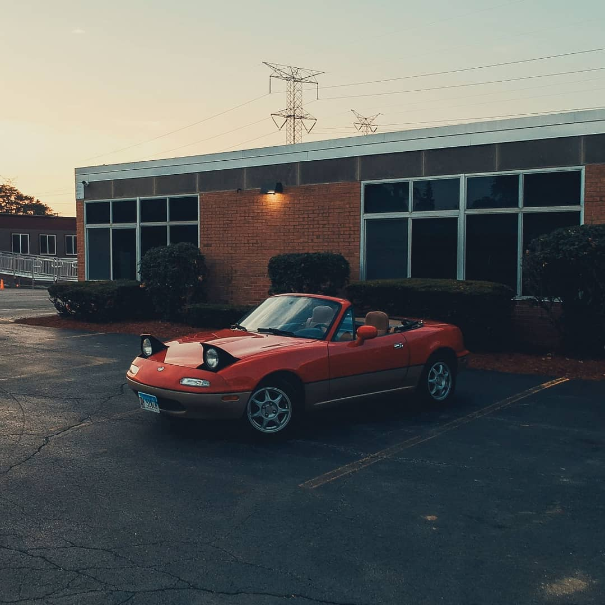
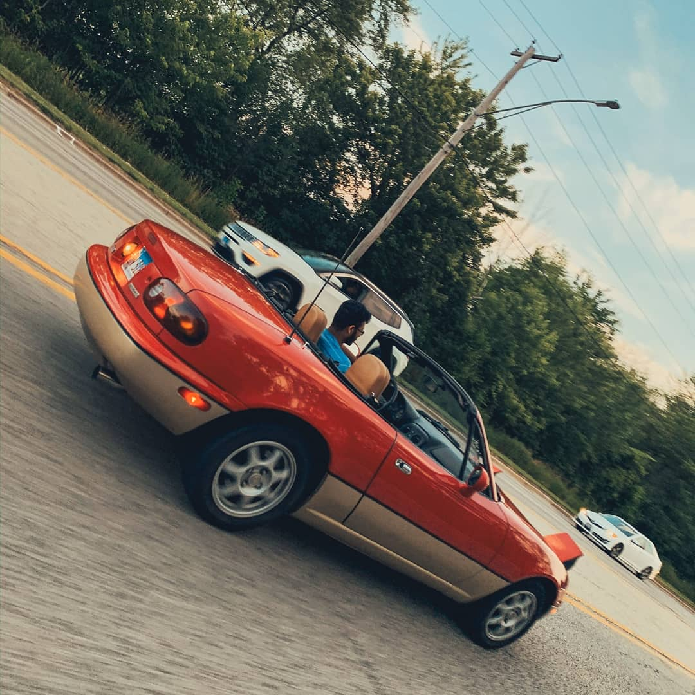
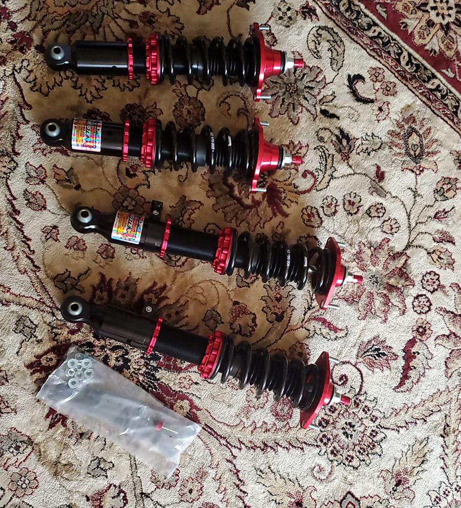
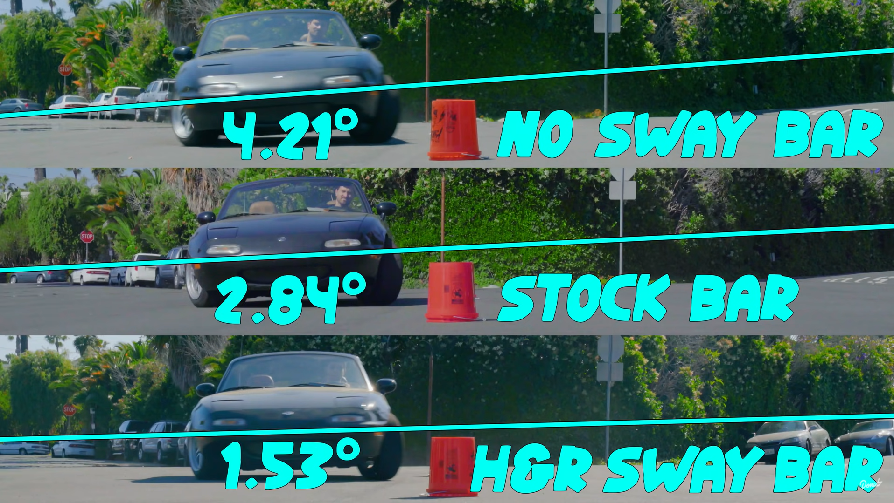
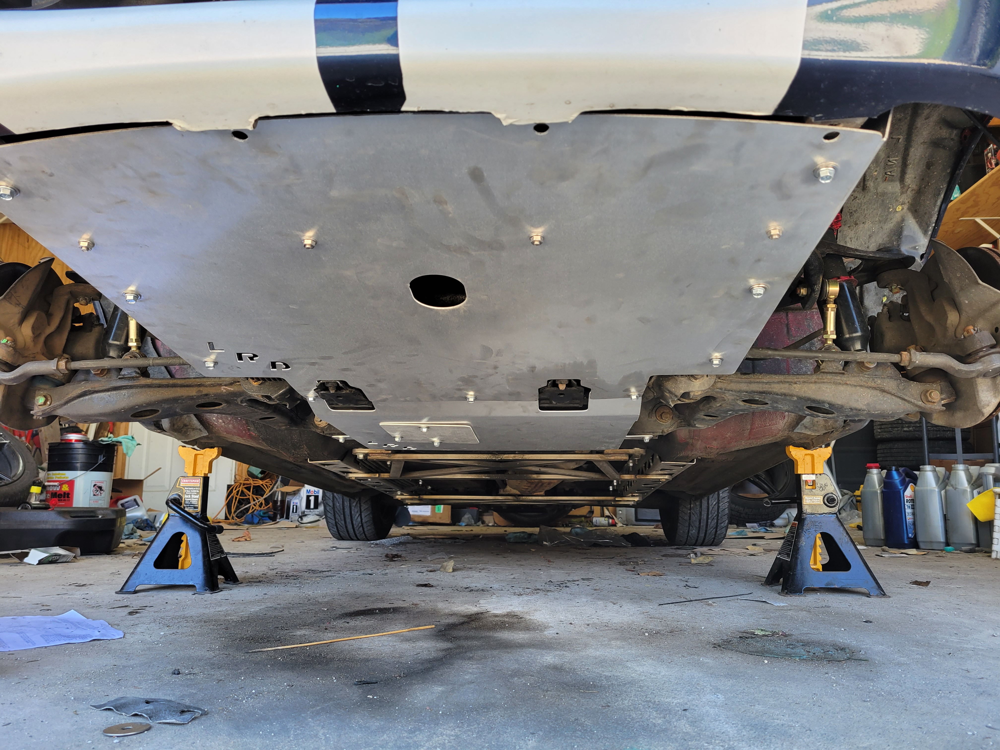

Some Background
For my 18th birthday, I decided to purchase my very first car. I did not need something practical since I was still living with my parents and commuting to UIC via train.
I've really wanted to learn how to build and race a car of my own. When I discovered a low mileage all orignal, and immaculately maintained Mazda Miata for a great price, I had to make the three hour drive to check it out. I also wanted to learn how to drive a manual transmission car and there is almost no better car to learn on than this.
 How the car looked the day I bought it. It did have a poorly finished repaint on the bottom half of the car which has since been taken care of.
At this point in time, the car was ready to take to the local track and tackle any obstacle course the local Miata Club could come up with. Though, due to Covid I did not have a chance to autocross my car since I wanted my family at home to stay safe.
The Upgrades
Now, it is usually not recommended to upgrade your autocross car without truly understanding its driving characteristics in stock form. Since I had already understood the basics of autocrossing from the racing club my high school had offered, I decided to trust my instincts and ordered a full set of chassis and suspension upgrades. One upgrade leads to another (usually due to necessity) and by the time I had finished these upgrades, the car was not a very comfortable daily driver anymore. That was the goal since this car will be autocrossed most of the time.
The very first upgrades that would assist my lap times that I installed were a set of coilovers behind all four wheels as well as a new set of wider wheels and tires. The coilovers serve two main purposes: to lower the cars center of gravity and to stiffen the suspension of the car. This allowed the weight transfer around corners to be predictable and gives the driver a better feeling of how well the car is gripping the road. The new set of wheels allowed the car to utilize wider tires, increasing its maximum grip.
 Fresh coilovers from Taiwan! Designed by MeisterR.
 Wheels installed but not the coilovers. It is clear that the ride height is not very optimal and the cars weight would be harder to predict than when lowered
Wheels installed but not the coilovers. It is clear that the ride height is not very optimal and the cars weight would be harder to predict than when lowered
Now that the car was lowered I was running into new problems. The lowered ride height had shifted the suspensions geometry quite a bit and the anti-sway bar was under extreme stress. Additionally, the front sway bar end link bushing had completely removed itself from the picture. I decieded it was time to run stiffer sway bars to reduce how much the chassis sways (which impacts how much the car under/oversteers). This part in particular, paired with the past upgrades made the car feel like it was driving on rails!
 A comparison of how a Miata responds to different sway bars. Image from Donut Media on YouTube.Now before it could get too cold since it was about late October in Chicago, I needed to add one more upgrade to tie all of these upgrades together. Since this car is a convertible, the lack of a roof above reduces the rigidity of the chassis quite a bit. This meant that whenever the road was bumpy or a very tight turn was approached, the whole car would flex and bend more than enough for it to significantly impact the geometry of the suspension. This chassis flex negatively impacted how well the suspension could work, since the suspension relies heavily on the frame of the car being completely straight to work properly. Due to this issue, I needed to stiffen the frame. I decided to install some frame rails under the car and added cross bracing to the frame rails to allow them to really pull the car together.
 Pictured: towards the back we can see the new frame rails running parallel to the wheels and the cross brace that connect both rails. Bonus part: I added some aluminum shielding under the car to protect vital components since it is so low.That concluded all of my autocross related upgrades. I finshed all of these upgrades by Thanksgiving 2020 and unfortunately had to wait till the following Spring to be able to drive the car again since it was stored away from the freezing Chicago winter.
Besides these upgrades, many other miscellaneous and supporting modifications had taken place but were not pictured. For example, the obvious color change was not explained but it was only fitting for the car to feature racing stripes as a race car. In the interior, the sound system was completely redone since I do enjoy listening to music and cruising around town when the weather is nice. Finally, I had installed a short throw shifter which reduces the distance required from changing between gears inturn reducing shift times.
The Results
Unfortunately, I was not able to collect any data of how the car performed when it was stock but the current results of the car are amazing. By my third autocross event this year, I was keeping up with all of the other cars in my class and I nearly caught up to the same time the veteran autocross members were winning. Keep in mind that this was my very first proper autocross that I had ever competed in. More information and lap times can be found here.
From the day that I purchased the car to now, the car has essentially gone through a complete transformation. Its previous driving and handling characteristics have been altered to better meet improved autocross lap times and the aesthetic modifications allow it to do so in style!
A couple of notes: on this car, I have done all of the work by hand in my garage using basic hand tools. The only exception is the cars vinyl wrap which was done by my friend. Additionally, I wanted to thank my father for giving me space and tools to learn and build a machine that is very capable. Finally, a big thank you to the Windy City Miata Club for hosting such amazing events every week as well as maintaining a safe and fun environment to practice driving.
Finally, here is a slideshow of how the car currently sits while performing as well as a comprehensive parts list:
Parts List:
| Part | Description | Summary | From |
|---|---|---|---|
| Coilovers | Suspension | Stiffens the handling characteristic of the car | MeisterR |
| Wheels | Suspension | Wider wheels allow wider tires for more grip | Advanti Racing |
| Sway bar and adjustable end-links | Suspension | Reduces chassis sway | Flyin' Miata |
| Cold Air Intake | Engine | Colder air into the engine allows for more oxygen to combust, increasing power output | Made by hand |
| Short throw shifter | Drive Train | Reduces time to shift gears | Miata Roadster |
| Frame rails + butterfly brace | Chassis | Increases chassis stiffness | Flyin' Miata |
| Larger brake master cylinder | Brakes | Larger bore allows for a stiffer and firmer brake pedal | V8 Roadsters |
| LED headlight conversion | Cosmetic | See everything at night | Morimoto |
| LED turnsignal conversion | Cosmetic | Brighter indicator lights | 2Jack Customs |
| Blutooth controlled pop-up headlights | Cosmetic | Remote control of the headlight motors | MX5 Tech |
| Speaker system | Interior | Hear music on the highway | JL Audio, Polk, Pioneer, Leroy Engineering |